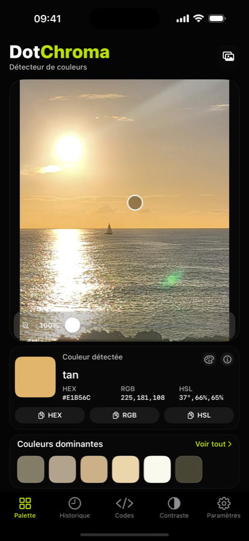
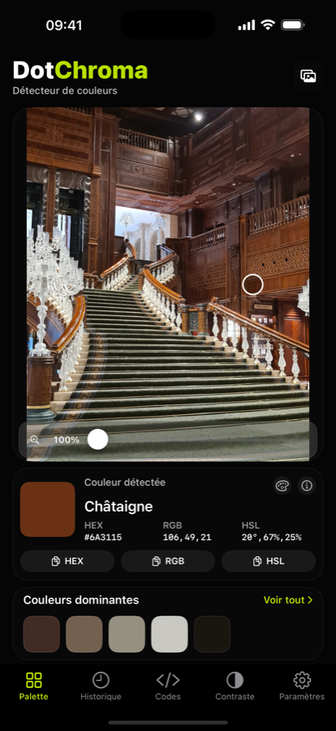
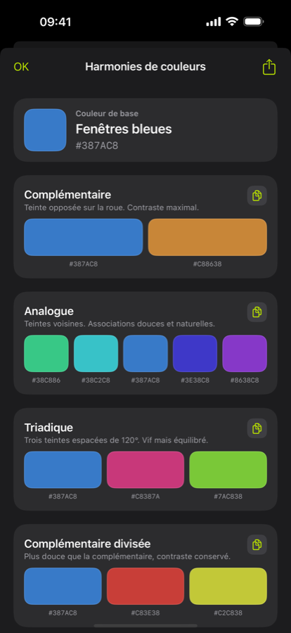
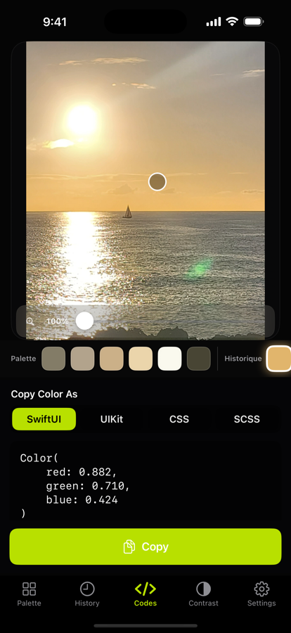
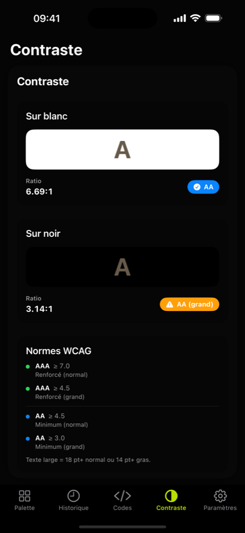
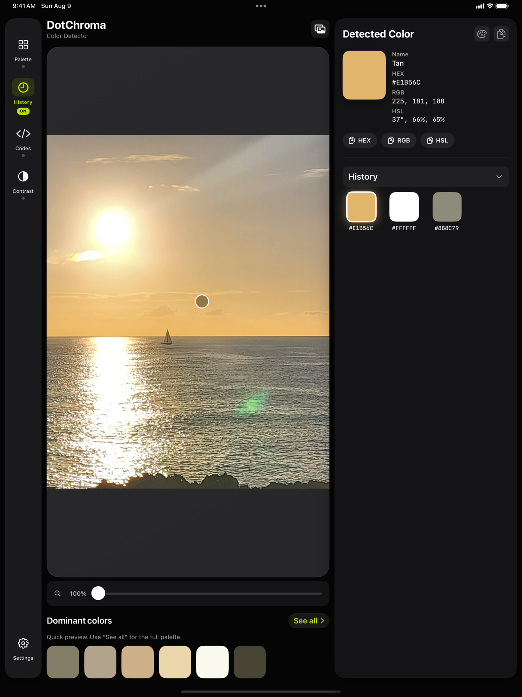

🎯
Precise sampling
Import a photo or take one on the spot, then tap a point. The magnifier targets the exact pixel; smoothed mode averages a small area to reduce noise.
Made for iPhone and iPad
Tap any pixel: DotChroma gives you its shade, its name in your language, its developer codes and its WCAG contrast. No account, no cloud, no ads.

DotChroma in action
Filmed in the app, at real speed: shoot a subject, sample its colours, zoom to 500%, read the codes and check the contrast.
Turn the sound on for the original music.
One eyedropper, all the work around it
DotChroma does not just read a color: it names it, surrounds it with its neighbours, turns it into code and checks that it stays readable.
Import a photo or take one on the spot, then tap a point. The magnifier targets the exact pixel; smoothed mode averages a small area to reduce noise.
The main hues of an image are extracted automatically. Tap a swatch to make it the active color.
“Taupe”, not “green”. Localized xkcd palette or standard CSS names, your choice — in English, French, German, Spanish and nine more languages.
Ratio on white and on black, AA and AAA compliance per WCAG 2.1. Enough to settle an accessibility question in a second.
HEX, RGB, HSL, SwiftUI, UIKit, CSS and SCSS. Copy a value with one tap, or export the whole palette as text or CSV.
No image sent to the internet. No account, no ads, no tracker. All processing is local.
Preview
A neutral, glare-free background: nothing distorts the shade you are looking at.




Lighting matters, and that is normal.
The detected color depends on ambient light, the white balance of your photo and your display settings. The same wall looks different in shade, in direct sunlight or under a warm lamp. That is not a flaw in the app: DotChroma reads the pixels of your image faithfully. To match a paint, a fabric or a physical sample, sample under stable lighting.
Pricing
No subscription, no account to create, no advertising.
0 €
10 image imports per month
4,99 € once
Everything in Free, without the limit
On a large screen the image and the color panel sit side by side: you sample on one side and read the values on the other.
